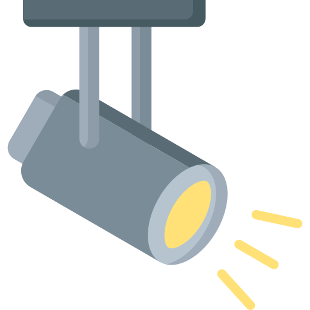

Hello.
I provide services specializing in lighting and video design, programming, show operation, project and product management for the live events and architectural industry with an emphasis in control and design. I am currently studying software development and am open to opportunities in or outside the entertainment industry and my comfort zone. As well, I have spent the last 2 years learning and working primarily as a video engineeer.
My Skills.
- 16 years experience in the entertainment, live events,and theatrical industry specializing in control, design, lighting design, product management, and technical support
- 8 years working in the distribution, procurement, product enhancement, technical document creation, support and training of high end lighting, video, and staging products
- Top notch programmer of multiple lighting consoles and media servers including Arkaos, Avolites, Hippotizer, MBOX, Pixera, Ai, and Disguise with an emphaisis on GrandMA and ChamSys lighting consoles
- Conceptualize and design visuals, network and line diagrams using industry standard softwares like Vectorworks, Sketch-up, Capture, and MA3D
- Video engineer specializing in projection and Christie Spyder operation and programming
- Extensive experience in concert touring, working and living internationally
- Fluent in Spanish and capable of transcribing or translating in both English and Spanish
Selected experience
Amazing Industries
Video technician
Greta Van Fleet
Lighting Director
Chayanne
Lighting director
Okada Manila
Senior Technical Manager-Entertainment technical
Managing and training the Technical Operators for the Entertainment Technical team on site during the build
These areas included much of the property with emphasis on The Cove nightclub and indoor beach club and
video and lighting for The Corridor; a 1.2mile glass projection surface.
Project Manage the exterior architectural lighting for the property, The Garden lighting and the dome and
corridor interior lighting.
Attend and lead meetings including minutes for ongoing projects related to said projects.
Design, generate mockups, and interpret various projects to be handed over to contractors.
Lighting, video, and laser system designer for The Cove nightclub and beach club, The Corridor, and LED façade which consisted of 14000 meters of LED strips.
Create and submit reports for said projects along with incident reports, SOPs, equipment justifications for
procurement, recommendations, timelines and forecasting.
Assist and lead in the setup, programming and operating of events on site with the ET team.
Act Lighting
Product specialist for GrandMA product line
1st line of support for ACT Lighting products with an emphasis on GrandMA consoles and media servers
Conduct product demonstrations for dealers and end users as well as at tradeshows and events
24/7, 365-days a year phone, email and online technical support availability requiring dedication and continuous
responsibility
Conducting GrandMA training mostly via travel
Producing guideline documents and online training material
PRG Distribution
Product manager and technical sales
1st point of contact for PRG Distributions product line with an emphasis in control as the ChamSys and Arkaos Product specialist in North America
Conducting product demonstrations for dealers and end users as well as at tradeshows
Design and draw tradeshow booths as well as setup and show teardown including all PRG DNA shows and expos
24/7, 365-days a year phone, email and online technical support availability requiring dedication and continuous responsibility
Diagnosis of console and server repairs and liasion between client and PRG service center in Dallas, Texas
Execute all forecasting aand maintaining demo logs for ChamSysand Arkaos
Conduct all console and server trainings as well as produce guideline documents for staff and end users
Relay product improvements from end users to developers
Creating the path to success in North America that ChamSys is currently experiencing
Lil Wayne "I am Music" tour
Lighting and Video programmer
Fall Out Boy
Lighting Designer and Director